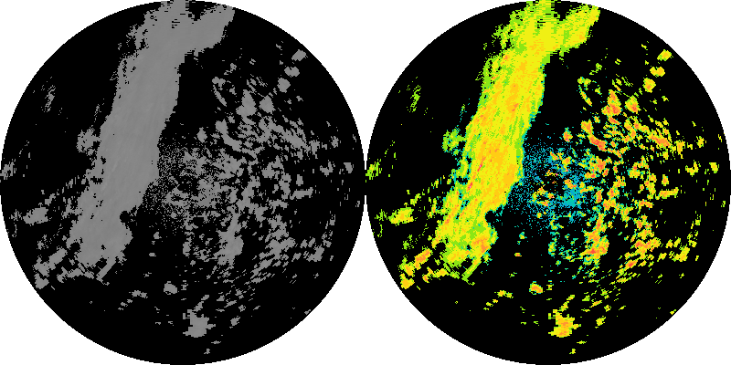
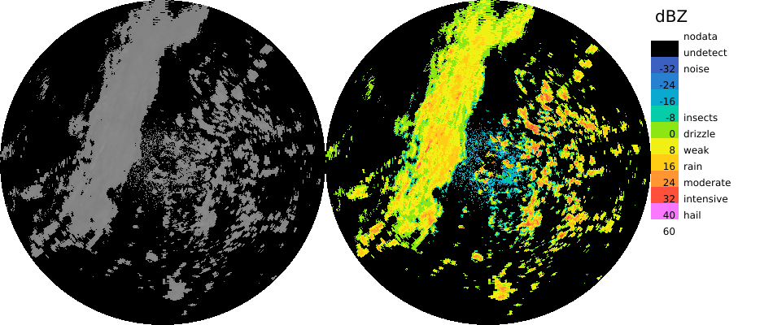
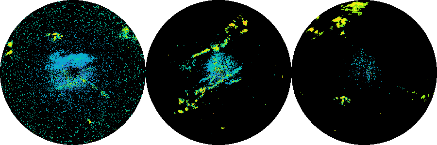
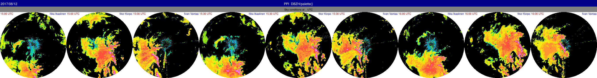
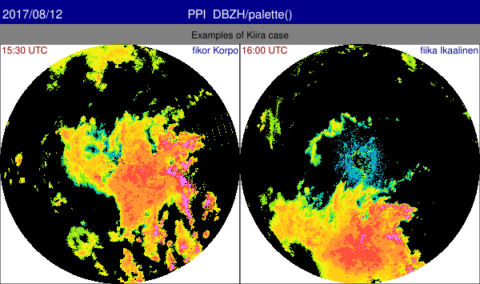
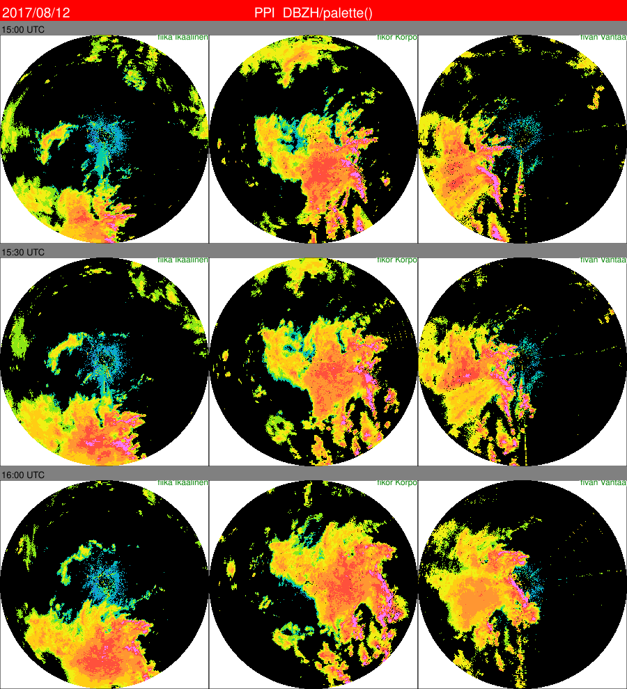

Automatical generation of SVG files
Rack supports presenting generated PNG images collectively using Scalable Vector Graphics (SVG) format.
When executing Rack, all the PNG images that have been written with –outputFile / -o
are included automatically in a simple internal SVG structure. This is neither time nor memory consuming, as the SVG structure itself is lightweight. In addition, some processing - like alignment of elements - only if an SVG file is actually written with –outputFile
Examples of SVG panels
Align two images horizontally (default)
rack --outputPrefix $PWD/out/ \
volume.h5 --cSize 400 -Q DBZH -c -o gray.png --palette 'default' -o rgb.png \
-o simple.svg
Definition: DataSelector.cpp:44

SVG output 'simple.svg'
Also legend outputs are included in the resulting SVG panel.
rack --outputPrefix $PWD/out/ \
volume.h5 --cSize 400 -Q DBZH -c -o gray.png --palette 'default' -o rgb.png \
--legendOut legend.svg \
-o simple2.svg

SVG output 'simple2.svg'
With several inputs, it is handier to use
--script . Output names must be distinct, which is achieved using variables. For details, see
Defining scripts and
Formatting metadata output using templates . If generated products contain varying metadata, titles appear, automatically grouping distinguishing data.
rack --outputPrefix $PWD/out/ \
--script '--cReset --cSize 300 -Q DBZH -c --palette "" -o out-${NOD}.png' \
data/pvol_fi{anj,kor,kuo}.h5 \
-o triple1.svg

SVG output 'triple1.svg'
Rack supports grouping output images to rows or columns. The groups are identified with
--gGroupTitle arg , using distinguishing variables in the argument, for example
${NOD} ,
${what:date} or
${what:time} .
rack --outputPrefix $PWD/out/ \
--script '--cReset --cSize 300 -Q DBZH -c --palette "" -o out-${what:date}T${what:time}-${NOD}.png' \
--gGroupTitle 'Sky conditions at ${time|%H:%M} UTC' \
data-kiira/20170812*.h5 \
-o time-series1.svg

SVG output 'time-series1.svg'
Similar example using originating radar as the distinguishing metadata.
rack --outputPrefix $PWD/out/ \
--script '--cReset --cSize 300 -Q DBZH -c --palette "" -o out-${what:date}T${what:time}-${NOD}.png' \
--gGroupTitle 'Examples of ${PLC} (${NOD})' \
data-kiira/20170812*.h5 \
-o radar-series.svg
SVG output 'radar-series.svg'
A further example, with three levels of titles.
rack --outputPrefix $PWD/out/ \
--script '--cReset --cSize 300 -Q DBZH -c --palette "" -o out-${what:date}T${what:time}-${NOD}.png' \
--gGroupTitle 'Examples of Kiira case' --gStyle .IMAGE_BORDER='stroke:black;stroke-width:1' \
data-kiira/201708121530_radar.polar.fikor.h5 data-kiira/201708121600_radar.polar.fiika.h5 \
-o series-labelled2.svg

SVG output 'series-labelled2.svg'
Titles can be removed with respective empty command values:
rack --outputPrefix $PWD/out/ \
--script '--cReset --cSize 300 -Q DBZH -c --palette "" -o out-${what:date}T${what:time}-${NOD}.png' \
--gTitle '' --gGroupTitle '' --gStyle .IMAGE_BORDER='stroke:black;stroke-width:1' \
data-kiira/201708121?00_radar.polar.fi{kor,ika}.h5 \
-o series-labelled3.svg

SVG output 'series-labelled3.svg'
A further example, usage of styles
rack --outputPrefix $PWD/out/ \
--script '--cReset --cSize 300 -Q DBZH -c --palette "" -o out-${what:date}T${what:time}-${NOD}.png' \
--gTitle 'AUTO' --gGroupTitle 'AUTO:Examples of ${what:time}' --gTitleBoxHeight '30,20,10' \
--gStyle .IMAGE_BORDER='stroke:black;stroke-width:1' --gStyle 'rect.MAIN_TITLE=fill:red' \
--gStyle .MAIN_TITLE='font-size:15;font-family:Times' --gStyle .LOCATION='fill:green' \
data-kiira/201708121??0_radar.polar.fi{ika,kor,van}.h5 \
-o series-styled.svg

SVG output 'series-styled.svg'
Alignment of the elements is done horizontally or vertically. By default, images are positioned horizontally, from left to right. This can be changed with –gLayout , selecting orientation as HORZ or VERT and coordinate direction as increasing (INCR ) or decreasing (DECR ).
The resulting SVG file can be converted to various other image formats using ImageMagick's convert program, for example. A good alternative is inkscape .
Relative or absolute image file paths?
In SVG files, IMAGE elements may use either relative or absolute file paths. By default, Rack uses absolute paths in IMAGE elements. Should relative paths be used, simply use them on commandline, or use –outputPrefix $PWD/ together with –outputConf svg:absolutePaths=false .
Some considerations:
- If an SVG file is to be placed on an HTML page, file references of IMAGE elements must be relative – HTTP servers typically avoid revealing any system-side paths, hence do not support them in openly adressing files.
- ImageMagick's
convert and display programs seem to require absolute paths in filenames.
Inkscape program supports both
With Rack , SVG files can also be created using templates, see Formatting metadata output using templates .
 1.9.1
1.9.1